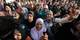

پذيرش > تریبون > زنان مصر خواهان نقش بيشتري در دولت هستند


 زنان مصر خواهان نقش بيشتري در دولت هستند زنان مصر خواهان نقش بيشتري در دولت هستند
4 مرداد 1390 - ترجمه: سیمین رادمنش - نسخه قابل چاپ
تغییر برای برابری: همزمان با تغييرات جديد "اسام شرف"، نخست وزير مصر، در كابينه ي جديد خود و تلاش براي جلب رضايت جنبش معترض خود جوش خياباني از طريق نماينده اي رسمي اي از طرف دولت مصر، زنان آغاز به سخن كرده اند و خواهان داشتن سهم نمايندگي قابل توجه تري در سياست هستند.
اسام شرف در روز يكشنبه 14 نفر از وزراي كابينه اش را تغيير داده است، از جمله جايگزيني وزراي امور مالي و امور خارجه. اما با اين وجود فضاي بحث برانگيز داخلي و وزير قوه ي قضائيه همچنان به جاي خود محفوظ مانده اند.
سازمان هاي فعال زنان مدعي هستند كه با وجود تنها يك زن در كابينه ي جديد، " فائزه ابول ناگا"، وزير برنامه ريزي و همكاري هاي بين المللي، دولت جديد از شرايط مساوات طلبانه بسيار فاصله دارد.
اگرچه روزنامه ي مصري "الاهرام" اين را "ليبرال تحت سلطه" توصيف كرده است، معترضان ميدان التحرير كه عامل اصلي اين تغييرات بوده اند مدعي هستند كه كابينه ي جديد بيش از اندازه حامي دولت "مبارك" است. اعتراض عمومي مردم اسام شرف را وادار به تعويق انداختن مراسم سوگند خود در روز سه شنبه كرده است.
ناديده گرفتن عمدي زنان
"ناهد شاهات"، سرپرست برنامه ريزي مركز حقوق زنان در مصر (ECWR)، يك سازمان مستقر در قاهره، در گفتگو با رسانه ها گفت: "اين ناديده گرفتن عمدي نقش نمايندگي زنان در سياست است. زنان در كنار مردان در ميدان التحرير ايستادند و مانند مردان كشته و زخمي شدند. اين يك مسئله ي جنسيت اي نيست، اين يك دوره ي مهم از گذار دمكراتيك است.".
پنج ماه پس از عزل رئيس جمهور "حسني مبارك" در طي يك خيزش مردمي در ميدان التحرير قاهره، كابينه ي شرف كه توسط ژنرال ارتش پشت پرده ي شوراي عالي نيروهاي مسلح (SCAF) منصوب شده است در تلاش بسياري براي پيدا كردن زمين همواري براي دولت خود است.
شاهات مي گويد: هيچ مانع مذهبي يا آموزشي اي براي نشاندن زنان در پست هاي رهبري در مصر وجود ندارد. با توجه به اين كه زنان در حال حاضر به عنوان قضات، اساتيد دانشگاه و رهبران اجتماعي در جامعه مشغول به خدمت هستند. وي افزود: اين مسئوليت دولت براي القاي مفاهيم برابري در جامعه با انتصاب زنان در پارلمان، در دولت جديد و به عنوان فرماندار است.
در مطبوعات منتشر شده توسط (ECWR) توضيحي در مورد اين كه در نظر گرفته شدن چه نسبت از سهم براي زنان عادلانه در نظر خواهد گرفته شد، اما شاهاتا مي گويد كه 30 درصد عدد معقولي براي اين هدف خواهد بود.
زنان در مصر از سال 1956 داراي حق راي هستند و تحت لايحه اي كه در سال 2009 به تصويب رسيده است براي زنان 64 كرسي در مجلس، مجلس عوام پارلمان مصر، از مجموع 454 كرسي محفوظ است. پيش از آن و قبل از انتخابات سال 2005 تنها 9 زن كرسي اي در پارلمان مصر داشتند. آن ها تنها 2 درصد از كل كرسي هاي نمايندگي را در اختيار داشتند.
رياست جمهوري، شغلي تنها براي مردان
اخوان المسلمين، نيروي سياسي پيشرو در مصر، اجازه ي نامزدي زنان براي نمايندگي مجلس را داده است، اما با احراز پست رياست جمهوري براي زنان، با اين استدلال كه تحت قوانين اسلامي اين پست تنها براي مردان محفوظ است، مخالف است. هيچ عضو زن اي در گروه اخوان المسلمين در تصميمات مرتبط به سازمان دهي و ساخت ارگان ها و نهادها، شوراها و گروه هاي رهبري حق دخالت ندارد.
با اين وجود در انتخابات رياست جمهوري به دليل انتخابات پارلمان پاييز آينده، يك زن در حال برنامه ريزي براي رقابت در برابر 19 مرد است. "بوتحينا كمال"، 49 ساله، گوينده ي تلويزيون و فعال اجتماعي براي مشاركت هاي فعال خود در روند انقلاب و مواضع صريح اش عليه رژيم نظامي به فردي محبوب در ميان توده ي ميدان التحرير بدل شده است.
انقلاب در حال به سرقت رفتن است
او در روز سه شنبه در گفتگويي به روزنامه ي الاشرق الاوسط، كه در لندن مستقر است، به خبرنگاران گفت: " انقلاب در حال به سرقت رفتن است. در اين مدت ما به ميزان كافي و طولاني آرام و بي حركت در اطراف بوده ايم، و نتيجه ي اين عمل به عقب رانده شدن ما بوده است.". كمال اين هفته براي ادامه به اعتراض عليه دولت به ميدان التحرير بازگشته است.
مبارزان ضد فساد
كمال، آراسته به لباس هاي مدرن، بي پرده و با يك نخ سيگار بين انگشتان خود، وعده ي راه اندازي يك كمپين ضد فساد را مي دهد. او گفت لفاظي (SCAF) براي او يادآور دوران مبارك است و اين حاوي تهديدها و هشدارها وخطراتي است كه معترضان ميدان التحرير در معرض آن بودند.
"مايا قاسم"، يگ دانشمند علوم سياسي در دانشگاه آمريكايي قاهره گفت: بحث در مورد حضور زنان در سياست بي ربط است، چرا كه او باور ندارد كه مصر روند دمكراسي را در آينده اي نزديك تجربه كند. قاسم در گفتگو با رسانه ها گفت: روند دگرگوني به سمت دموكراسي سريع اتفاق نخواهد افتاد. ارتش اجازه ي انتقال قدرت را به اين زودي ها نخواهد داد.
قاسم گفت: سهميه بندي ها ضد دمكراتيك بودند، چه در صورتي كه براي زنان اعمال شد و چه در مورد هر گروه اقليت ديگري در مصر.
او گفت: "سهميه بندي ها جعلي هستند. اين ها تنها شكل ديگري از استبداد است.اولين زن مصري در سال 1924 وارد پارلمان شده است، بنابراين چرا بايد سهميه اي وجود داشته باشد؟ زنان درست مانند هركس ديگري بايد همچنان به فعاليت سخت خود ادامه دهند.
ارسال به
بالاترین
،
توییتر
،
فریندفید
،
فیسبوک
در همين بخش :
 دهمین دورۀ مراسم تندیس صدیقه دولت آبادی ۱۳۹۲ دهمین دورۀ مراسم تندیس صدیقه دولت آبادی ۱۳۹۲
کارت پستالهایی به بهانهی هشت مارس و به یاد همهی مبارزین راه برابری
بیانیه بیش از 350 تن از مدافعان حقوق زنان به مناسبت روز جهانی زن؛ زنان هر روز فرودستتر میشوند
لباسی که برای تن ما دوخته اند! /اعظم بهرامی
چالشها و چشمانداز فعالیت مدنی زنان
ديگر بخش ها :
طرح یک میلیون امضا
|
مقالات
|
سایت نوشته ها
|
اخبار
|
گزارش كمپين
|
گفت و گو
|
علیه سکوت
|
كوچه به كوچه
|
نامه های شما
|
گزارش ویژه
|
گفتگو با اعضا
|
ویژه سالگرد کمپین
|
تصویر برابری
|
دل آرام علی
|
تریبون
|
مقالات
|
تاریخ شفاهی
|
خارج از چارچوب
|
کتابخانه
|
درباره کمپین
|
کمپین در شهرها
|
کمپین در بند
|
صدای تغییر
|
ویژه 22 خرداد
|
لایحه حمایت از خانواده
|
گالری
|
عشا مومنی
|
امیر یعقوبعلی
|
خدیجه مقدم
|
راحله عسگری زاده و نسیم خسروی
|
پروین اردلان،جلوه جواهری، مریم حسین خواه، ناهید کشاورز
|
زینب پیغمبرزاده
|
سعیده امین، سارا ایمانیان، محبوبه حسین زاده، ناهید کشاورز و همایون نامی
|
احترام شادفر
|
نسیم سرابندی زاده،فاطمه دهدشتی
|
وبلاگ مهمان
|
پرونده خرم آباد
|
دستگیری ها
|
مریم مالک
|
پرستو اللهیاری
|
مهرنوش اعتمادی
|
سمیه رشیدی
|
Other Languages
|
همراهان
|
«فراخوان کمپین ده روز با بهاره هدایت»
| English
|